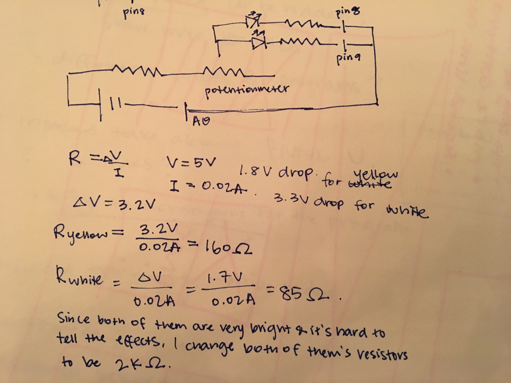
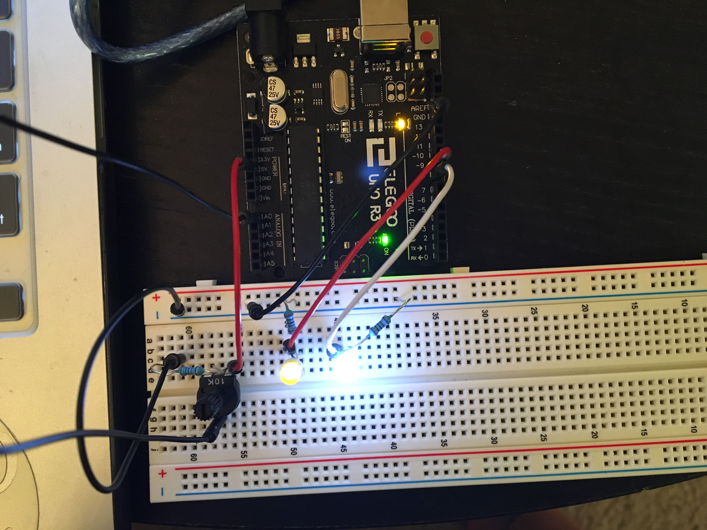

Assignment 3: Input! Output!
Here is all the documentation for Assignment 3!
The Schematic
 This drawing is the schematic of a potentiometer and two LED lights. Resisters are picked from assignment 1 and suggested in class, and with calculation shown in the picture.The Circuit
 This is the final set up for the circuit looping from pin9, pin10, 5V to GND.The Code
//This is a code that allows one Potentiometer controls two LED lights bright or dim at the same time.
//these constans won't change. They are names of the input and output pins.
const int analogInPin = A0; //analog input pin that the potentiometer is attached to
const int analogOutPin1 = 9; //analog output pin that the yellow LED light is attached to
const int analogOutPin2 = 8; //analog output pin that the white LED light is attached to
int sensorValue = 0; //value read from the pot
int outputValue = 0; //value output to the PWM
void setup() {
// initialize serial communications at 9600 bps:
Serial.begin(9600);
}
void loop() {
// read the analog in values
sensorValue = analogRead(analogInPin);
//map it to the range of the analog out put
outputValue = map(sensorValue, 0, 800, 0, 255);
//change the analog out value for the yellow and white LED lights
analogWrite(analogOutPin1, outputValue);
analogWrite(analogOutPin2, outputValue);
//print out the result to the Serial Monitor
Serial.print("sensor = ");
Serial.print(sensorValue);
Serial.print("\t output = ");
Serial.println(outputValue);
//wait 50 ms before the next loop begins so that the result is more obvious
delay(50);
}
The Operation of the Circuit
Below is a short demo of the circuit in operation.